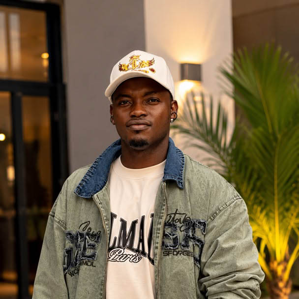
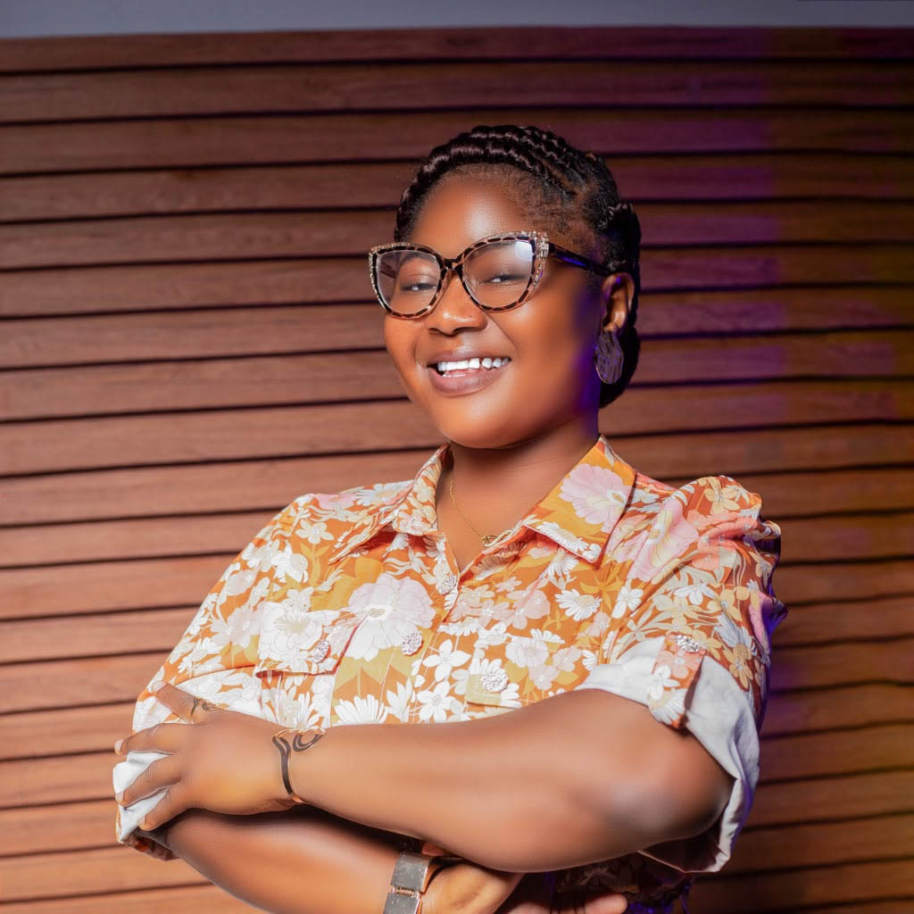
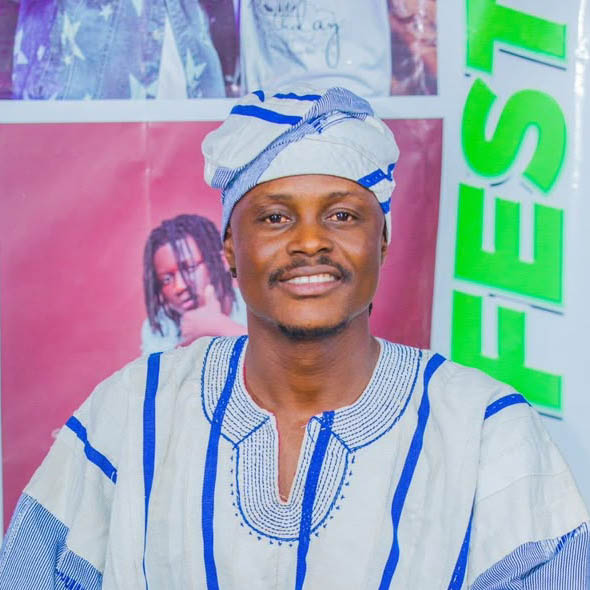
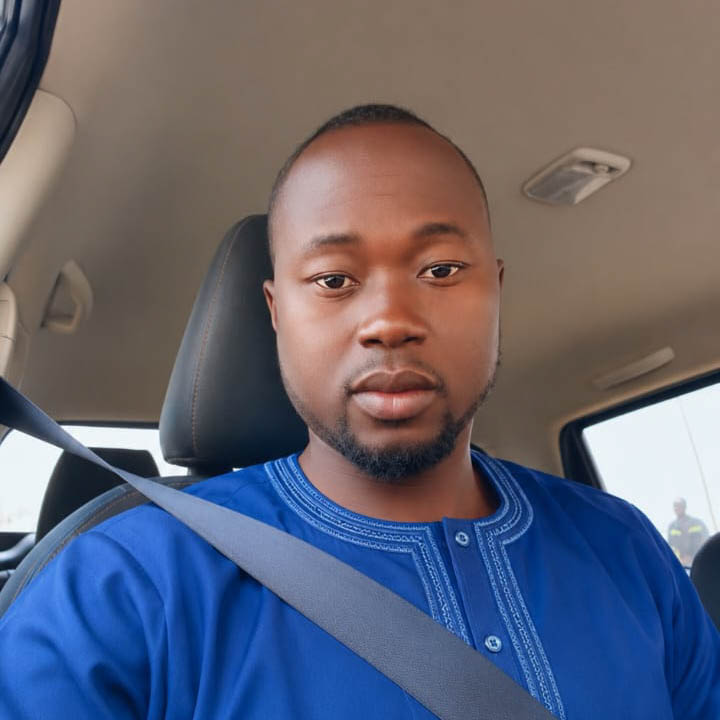
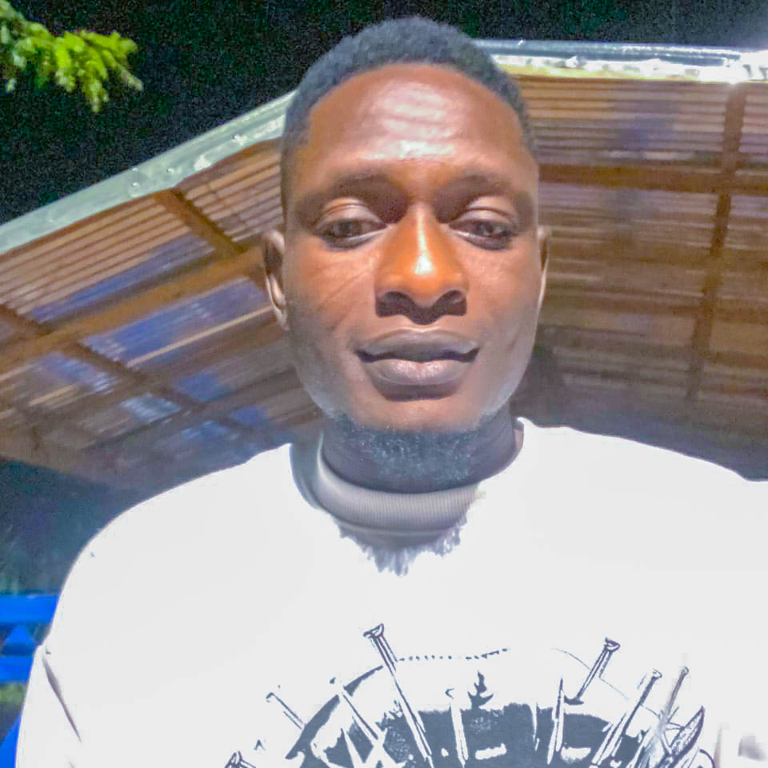
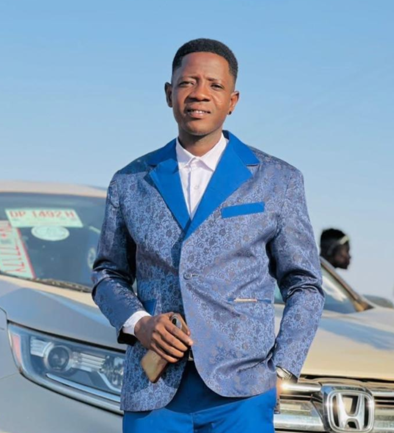
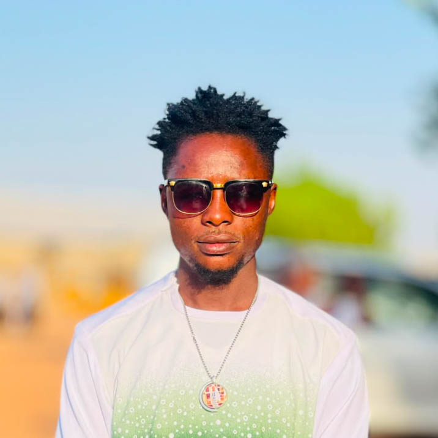

Who We Are
Rooted in compassion, driven by purpose — serving Kusaug's widows, orphans and persons with disabilities.
Mission
To improve the lives of widows and orphans by promoting social welfare, education and economic empowerment within the Kusaug community.
Vision
A society where widows and orphans are protected, empowered and valued — with equal opportunity and a brighter future for every vulnerable person.
Our Story
Inshallah Widows and Orphans Foundation was established with one clear mission: to improve the lives of widows and orphans through compassion, empowerment and practical support.
On 16 July 2026 in Binduri and 26 July 2026 in Garu, the Foundation held its landmark launch events — bringing together community leaders, volunteers and stakeholders united by a shared belief that every widow and orphan deserves dignity, inclusion and opportunity.
Under the leadership of CEO Awudu Fuseini (Top Senior) and a dedicated management team, the Foundation has already completed its first region-wide screening exercise, registering 6,132 beneficiaries across all six districts of Kusaug.
This is only the beginning. Together, we are building a stronger and more compassionate Kusaug where no vulnerable person is left behind.
Leadership
Dedicated individuals united by a shared commitment to transforming the lives of widows and orphans across Kusaug.

Dedicated to championing the welfare of vulnerable communities across the Kusaug region.

Committed to building partnerships that create lasting impact for widows and orphans.

Passionate about community-driven solutions and empowering the most vulnerable.

Works tirelessly to ensure every beneficiary receives care, dignity and opportunity.

Bringing compassionate leadership and strategic vision to the Foundation's programs.

Dedicated to advocacy, outreach and ensuring no widow or orphan is left behind.

Focused on operational excellence and delivering meaningful support across all six districts.